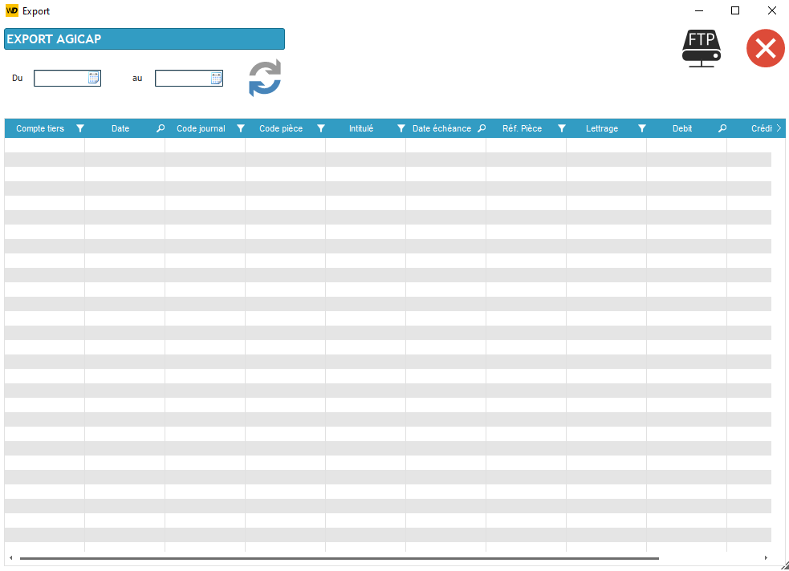
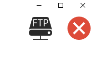
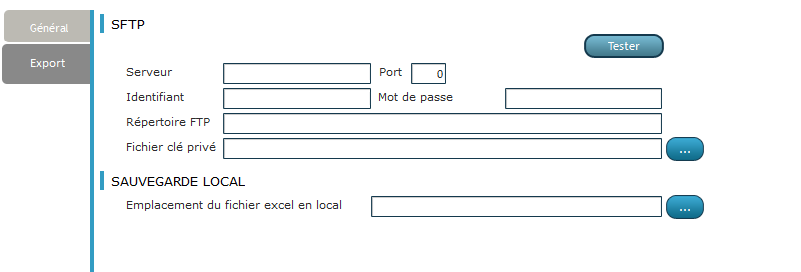
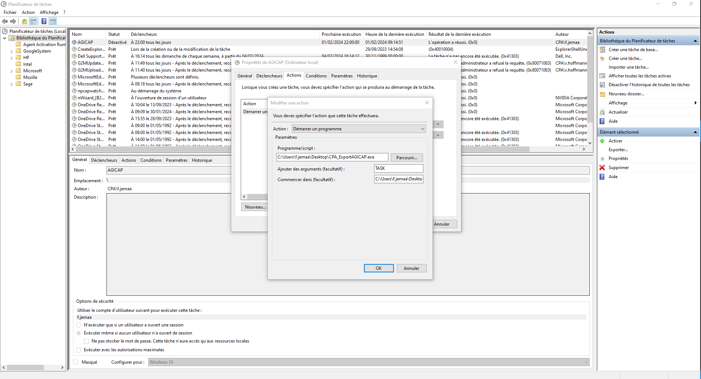

Agicap est une entreprise qui a été créée en 2016 par trois associés. Elle est spécialisée dans la gestion de trésorerie pour les entreprises. Elle propose une solution SaaS (Software as a Service) qui permet aux entreprises de gérer leur trésorerie en temps réel. Elle est basée à Lyon et compte aujourd'hui plus de 100 collaborateurs.
L'objectif est de créer un logiciel qui permet au client de AGICAP de pouvoir envoyer des fichiers des écritures comptables par SFTP (Secure File Transfer Protocol) et de pouvoir les exporter dans la base de données de AGICAP. Mais également en local, le fichier est en format XLSX (Excel). Pour finir créer un planificateur de tâches qui permet d'automatiser l'envoi des fichiers tous les jours à 22h.
La première fenêtre permet à l'utilisateur de saisir des dates, puis la table sera automatiquement remplie avec le contenu des écritures comptables comprises entre ces deux dates.
Le bouton suivant permettra de convertir la table affichée en fonction des paramètres en un fichier Excel, qui sera ensuite envoyé via SFTP
Une fenêtre intitulée "Paramètres" offre la possibilité à l'utilisateur d'enregistrer les configurations pour sauvegarder sur le serveur et déterminer le lieu d'enregistrement en local.
Le bouton "Tester" a pour fonction de vérifier la connexion au serveur. Il affiche un message indiquant que la connexion a réussi, ou signale un problème si les paramètres fournis sont incorrects.
À partir de là, j'utilise le planificateur de tâches de Windows et j'insère un argument clé qui informe l'application qu'il s'agit d'une tâche autonome. En ce qui concerne la date, j'utilise une valeur correspondant à trois mois en arrière à partir de la date actuelle.
